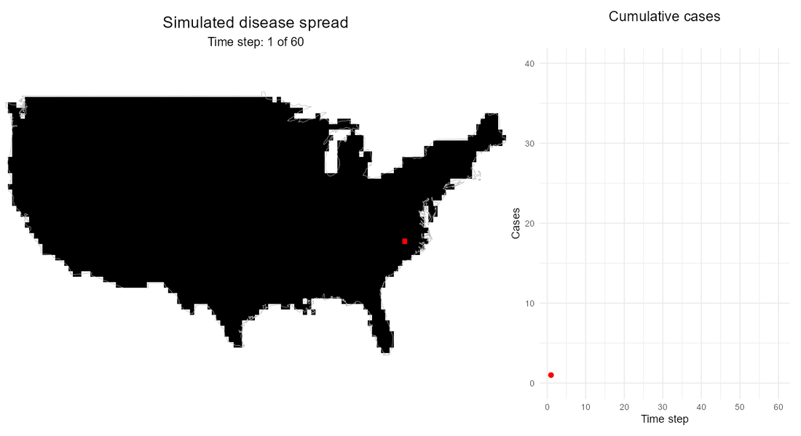

About me
Modeling, surveillance, biosecurity and applied data scienceI am a veterinary epidemiologist and Research Scholar at North Carolina State University, specializing in the study of infectious disease dynamics in animal populations. My work focuses on integrating epidemiological modeling, network analysis, and large-scale data systems to better understand how diseases spread within and between farms, and to inform effective surveillance and control strategies.
My research has a strong applied component, developed in close collaboration with industry partners and animal health authorities. I have contributed to the design of data-driven tools such as RABapp™, a platform that supports biosecurity assessment, disease monitoring, and decision-making at both farm and national levels. Through this work, I aim to translate complex data into practical solutions that improve preparedness and response to transboundary animal diseases such as African swine fever and highly pathogenic avian influenza.
More broadly, my goal is to advance One Health approaches by combining data, modeling, and field knowledge to support resilient and sustainable animal production systems.
